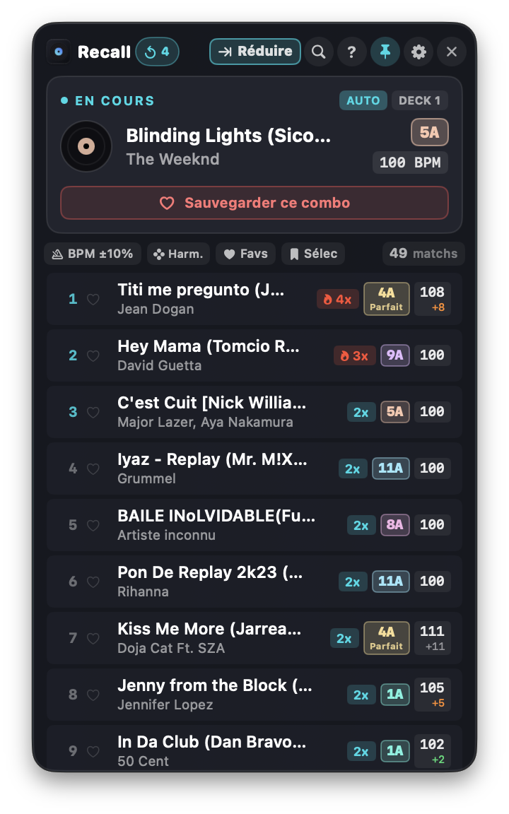

Le copilote intelligent qui fouille vos historiques Serato et Rekordbox pour vous suggérer instantanément vos transitions éprouvées et vos enchaînements harmoniques Camelot en plein set.



Pendant un set de 3 heures à 128 BPM, le cerveau d'un DJ est saturé. Recall veille sur vos platines pour ranimer vos plus belles inspirations sans vous déranger.
La fin du morceau approche. Vous cherchez fébrilement dans 10 000 titres un enchaînement magique que vous avez déjà fait par le passé, mais le titre exact vous échappe.
Vos logiciels DJ stockent des milliers d'heures d'historiques dans des bases de données dormantes. Personne ne les analyse pour vous faire profiter de votre propre expérience.
Les recommandations de streaming génériques ne connaissent ni votre style de mix, ni votre public, et tombent en panne au moindre trou de réseau en sous-sol.
Sélectionnez un titre ou choisissez une clé Camelot et un BPM pour voir comment Recall combine instantanément vos routines historiques et la compatibilité harmonique.
Chaque détail de Recall a été pensé pour s'intégrer discrètement dans votre workflow sans jamais accaparer votre écran.
Recall fouille vos sessions passées (Serato `master.sqlite` et Rekordbox XML) pour détecter vos paires de morceaux les plus jouées. Les flammes 🔥 7x vous indiquent immédiatement vos transitions éprouvées.
Chaque suggestion affiche sa clé Camelot exacte, ses clés voisines (+1/-1 heure), ses relatifs majeurs/mineurs ou ses boosts d'énergie (+2 heures) pour un mix sans fausse note.
Attrapez un titre depuis Recall et glissez-le directement sur la platine 1, 2 ou dans vos bacs de Serato et Rekordbox. Zéro manipulation fastidieuse.
Passez en un clic en mode bandeau minimaliste docké en bas à droite de votre écran. Vos formes d'ondes Serato restent 100 % visibles.
Recall détecte automatiquement si Serato DJ Pro ou Rekordbox est lancé et bascule sans effort. Aucune surcharge processeur.
Aucun compte requis, aucune télémétrie, aucune connexion Internet. Recall lit uniquement vos historiques locaux sans jamais modifier vos fichiers audio ni vos métadonnées.
Développé en Swift natif pour macOS et en C# / .NET 8 moderne pour Windows.
| Fonctionnalité | Recall Copilot | Algorithmes Streaming | Notes papier / Bacs fixes |
|---|---|---|---|
| Basé sur VOS routines passées réelles | ✅ OUI (Historique local) | ❌ Non (Générique) | 🟡 Partiel (Mémoire humaine) |
| Fonctionne sans Internet (Club / Sous-sol) | ✅ 100 % Hors-ligne | ❌ Impossible sans réseau | ✅ Oui |
| Harmonie Camelot en temps réel | ✅ Automatique & Trié | ❌ Non | ❌ Calcul mental manuel |
| Glisser-déposer vers le logiciel DJ | ✅ Direct dans Decks | ❌ Non | ❌ Non |
| Consommation RAM & CPU | < 25 Mo / 0 % CPU | > 400 Mo + Connexion | 0 Mo (mais statique) |
Téléchargez la version officielle 1.0.0 pour macOS ou Windows. Aucun compte requis, installez et mixez.
macOS 12.0+ Monterey, Ventura, Sonoma, Sequoia (Universal Apple Silicon M1-M4 & Intel)
Windows 10 & 11 (64-bit x64, .NET 8 WPF)
read-only), sans jamais verrouiller ni altérer les fichiers en cours d'utilisation.
Déclaration d'indépendance, propriété intellectuelle et respect absolu de la vie privée.